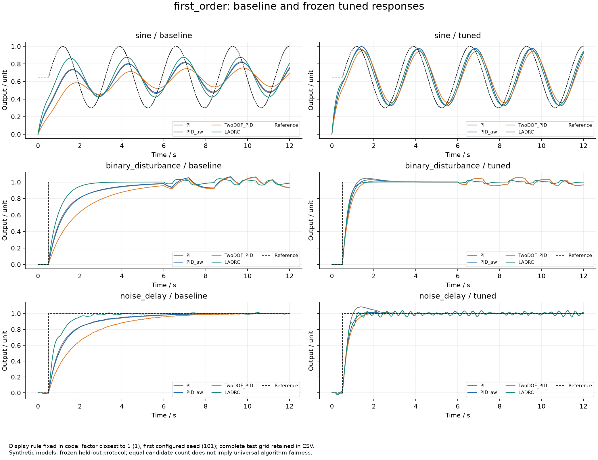
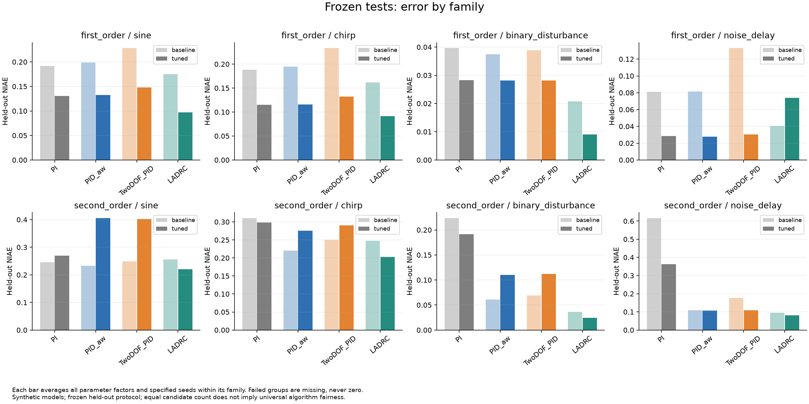
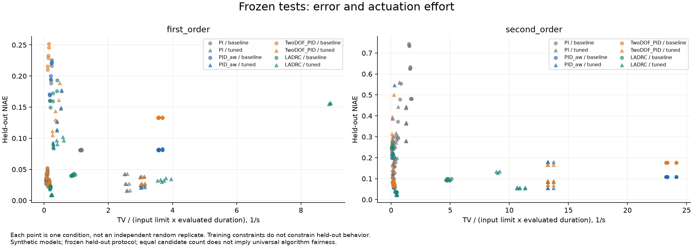
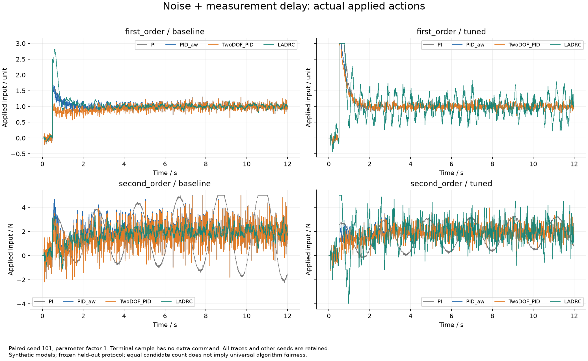
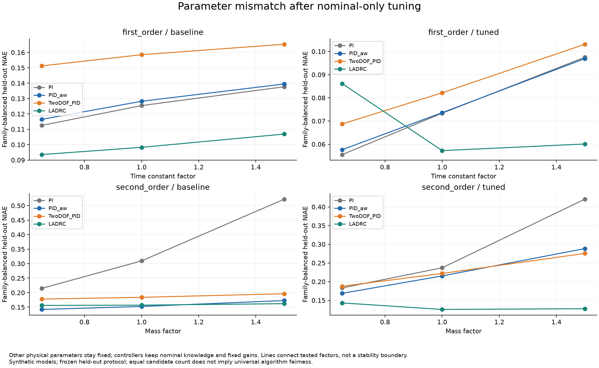
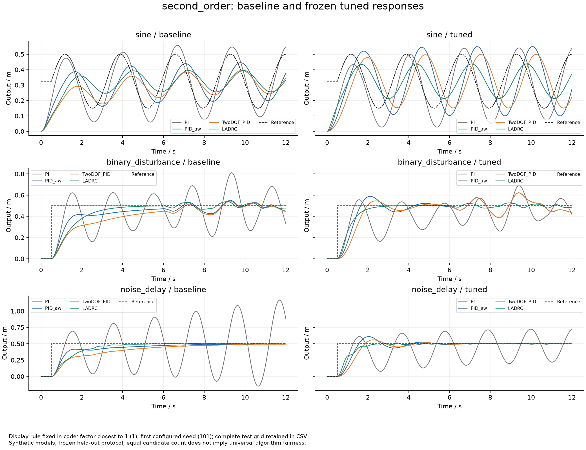
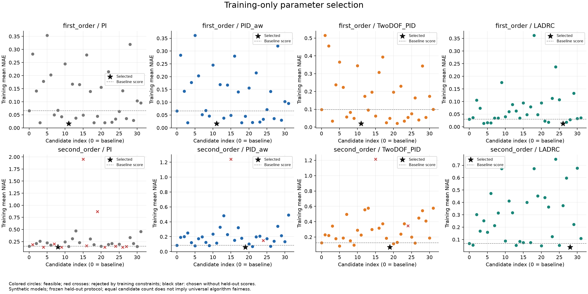
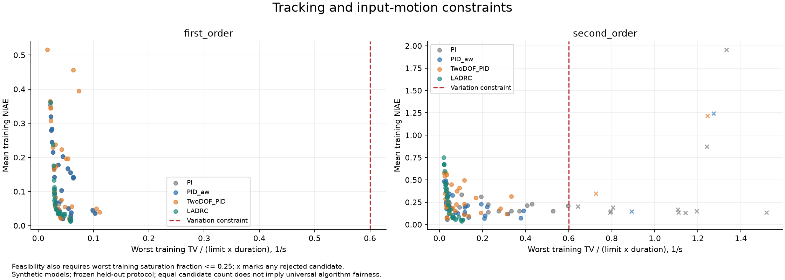

训练768次、冻结测试384次；执行或指标失败0次。合成模型，未进行硬件验证。
每组32个候选，在3个训练场景按误差和控制动作约束选择；先冻结选择文件，再运行4族未参与选择的测试。基线与整定后共用输入、噪声和物理参数。
汇总先在族内等权，再对4族等权。NIAE=IAE/(参考尺度×评价时长)，动作变化率=TV/(限幅×评价时长)，单位1/s。整组发生失败则不输出可比较的均值，失败不作零误差。
相同候选数不保证不同维度的算法严格公平；有限搜索不证明全局最优。场景与参数因子不是IID样本，没有现实可靠性概率。训练约束不保证在测试中继续满足。
扰动窗口可能含起步残差，不能据此直接宣称纯扰动因果效应；持续变化输入不计算常数恢复时间。
一阶对象单位为unit；二阶代表对象为质量弹簧阻尼，输出m，控制与扰动N。LADRC的b0固定名义值，不随测试tau/m改变。
实际配置 · 冻结参数 · 阶段顺序 · 逐次指标 · 族等权汇总 · 源码指纹 · 完整性
| 对象 | 算法 | 阶段 | NIAE | 动作变化率 /s | 失败 |
|---|---|---|---|---|---|
| first_order | PI | baseline | 0.12521822887790113 | 0.4112762210007813 | 0 |
| first_order | PI | tuned | 0.0754824765584956 | 0.8858748831074567 | 0 |
| first_order | PID_aw | baseline | 0.12805937712402393 | 1.0230696233810257 | 0 |
| first_order | PID_aw | tuned | 0.0760690719164054 | 1.003214808753557 | 0 |
| first_order | TwoDOF_PID | baseline | 0.15836713082990497 | 0.9877428352546191 | 0 |
| first_order | TwoDOF_PID | tuned | 0.08468661868419224 | 0.985455644102075 | 0 |
| first_order | LADRC | baseline | 0.099579576894583 | 0.41732413277861535 | 0 |
| first_order | LADRC | tuned | 0.0678189749788122 | 1.631955947204843 | 0 |
| second_order | PI | baseline | 0.34886937739545104 | 0.727369590077632 | 0 |
| second_order | PI | tuned | 0.2803676443990292 | 0.5649303692921599 | 0 |
| second_order | PID_aw | baseline | 0.15580938583783183 | 6.023349289483192 | 0 |
| second_order | PID_aw | tuned | 0.22421861714266753 | 3.4736136308334116 | 0 |
| second_order | TwoDOF_PID | baseline | 0.18606804970798058 | 6.0000144951925245 | 0 |
| second_order | TwoDOF_PID | tuned | 0.22843922237858913 | 3.4556295567842303 | 0 |
| second_order | LADRC | baseline | 0.15838837091617528 | 1.3471383944155495 | 0 |
| second_order | LADRC | tuned | 0.13215021440223015 | 2.758981290088549 | 0 |








全部测试CSV/配置位于runs，全部候选日志位于training。选择文件SHA-256：04481136778493b2cb7836c4d6a1828f7932dc4ad5daec1886322ba3e2656741